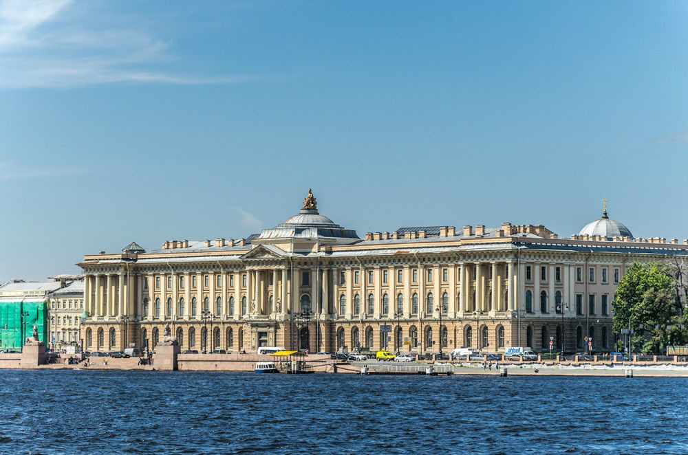

Saint Petersburg Repin Academy of Fine Arts [Introduction]: Repin Academy of Fine Arts (Russian: Академия художеств, full name: Academy of Oil Painting, Sculpture, and Architectural Art Research). Formerly the Russian Royal Academy of Arts. The Saint Petersburg Repin Academy of Fine Arts is the highest institution of art education in Russia, having trained many world-renowned artists. It is a world-renowned...
St. Petersburg Repin Academy of Fine Arts
[Introduction]: Repin Academy of Fine Arts (Russian: Академия художеств, full name: Academy of Oil Painting, Sculpture, and Architectural Art Studies). Formerly the Russian Royal Academy of Arts. The Repin Academy of Fine Arts in St. Petersburg is the highest institution of art education in Russia, having trained many world-renowned artists. It is one of the four world-renowned art academies.

School Introduction
The academy was founded in 1757 and was originally named the St. Petersburg Academy of Arts. During the reign of Catherine the Great, it was renamed the Imperial Academy of Arts. The main building of the academy was completed in 1789 and is located on the south side of Vasily Island, north of the Great Neva River, north of University Riverside, where the famous Sphinx statue stands by the river. After 1947, it was renamed the Ilya Repin Leningrad Institute for Painting, Sculpture and Architecture, and after 1991, it was renamed the St. Petersburg Institute for Painting, Sculpture and Architecture. Sergey. Sdaroduptsv: Former associate professor at the Vladivostok City Academy of Arts in Russia, member of the Russian Artists' Association, and Honored Artist of Russia. In 1994, he pursued further studies at the Repin Academy of Fine Arts in St. Petersburg, one of the world's four renowned art academies, Russia's highest art institution. On March 4, 2014 (Moscow time), a fire broke out at the Repin Academy of Fine Arts, reducing the ancient architecture department to ruins.
Teaching methods
The curriculum of the Academy is determined by the educational program and subjects. In implementing these programs, the focus is on professor guidance and personal studios. Most of these professors are renowned artists, and most are members and corresponding members of the Academy of Fine Arts. The Academy of Fine Arts creates a unique learning environment for students, including hands-on exercises in studios, classrooms, and museums, lectures, workshops, and classroom discussions; Learning to copy and create paintings; Teacher guidance and student independent work; Laboratory work, grade design, and graduation projects.
Diploma
Graduates of the Repin Academy of Fine Arts can obtain certifications such as painters, theater artists, cultural restorers, printmakers, sculptors, architectural artists, and literary scholars.
Foundation Admission Requirements
1. Notarized certificates of high school graduation certificates and proficiency exam results, and notarized transcripts of three years of high school grades
2. Passport
3. Artworks provided: two sketches and two color works (original, photo)
4. Oil Painting Department: Oil Portraits, Landscape Paintings, Sketch Portraits, Plaster Portraits (Photos)
5. Printmaking Department: Watercolor still life, sketch portraits
6. Sculpture Department must provide: plaster pixel art, oil painting works (photos)
7. Department of Architecture offers: Sketch portraits, city landscape paintings, landscape sketches (photos)
Department entrance exam requirements
1. Passed Russian written and oral test
2. Regular works are ranked in the department based on class hours and comprehensive evaluation
Educational achievements
1. Industry status
It is the highest institution of art education in Russia, having trained many world-renowned artists. It is as renowned as the Florence Academy of Fine Arts, Paris Academy of Fine Arts, and the Royal Academy of Fine Arts in London, and is one of the world's four renowned art academies, mainly training master-level art talents. Graduates of this academy possess strong artistic expertise in oil painting, landscape painting, painting, sculpture, and art appreciation. Many experts and lecturers from the Central Academy of Fine Arts in China graduated from this school, which enjoys broad recognition both in China and internationally.
2. Notable alumni
The academy has produced a large number of outstanding realist masters, including Repin, Surikov, Kuindezh, Shishkin, Polenov, Vasnetsov, Shelov, Leoka, and Vruberi. Domestic artists include Li Tianxiang, Zhao Youping, Quan Shanshi, Sun Huanhuan, and other veteran and emerging artists.
Discipline development
1. Sculpture Department:
The Repin Academy of Fine Arts has a 240-year educational tradition. Students in this department practice sculpting with real objects daily, as well as dressed and nude figures. Students in grades 1 to 5 spend three hours each day working on clay sculptures and two hours learning sketching. They practice sketching and finished works of commemorative sculptures, decorative sculptures, and their final works. They also learn to create deep or shallow reliefs, and there are courses in animal sculpture. The department also preserves an ancient tradition: students participate in horse farm work to observe animal habits.2. Line Drawing Series:
Students in this department study etching, stone printmaking, lacquer printmaking, copperplate printmaking, and woodblock prints. They learn to create line art and bookbinding art on various materials.
3. Department of Architecture:
It is the oldest architecture department in Russia. This major was established at the institute's founding, and many outstanding architects are educated and participate in teaching here. The faculty inherits the academy's tradition, believing that architecture is, on the one hand, realist art, and on the other hand, truly precise technical work. Here, they train high-level architectural artists. During the teaching process, future architects learn to master new technical and economic fundamentals, principles and directions of modern technological development, principles and directions of architecture, and the latest working methods in design work.
4. Oil Painting Department:
It is one of the largest departments at the Repin Academy of Fine Arts. It has six grades and more than 300 students enrolled. Students in the oil painting department maintain and develop the Russian realist style while learning sketching. The oil painting department has two teaching and research offices—the oil painting and creative teaching and research office led by the deputy rector of the Russian People's Artist Professor Besiko, and the sketching studio led by Professor Yeremeev, People's Artist of Russia. Many oil painting and sketching teachers have been awarded the titles of "People's Artist of Russia," "Honored Artist of Russia," and "Outstanding Russian Artist." Most teachers hold academic honors and degrees. Each year, the oil painting department admits 15-20 new students. Each candidate must submit their own oil paintings, sketches, creative works, landscape sketches, and portrait sketches. The Oil Painting Department offers students a variety of learning directions: easel painting, large-scale murals, stage art, restoration of ancient paintings, tempera, and church iconography.
Address
17 St. Petersburg University Bank Street (Университетская набережная, 17)
Transportation
Take the metro to Vasily Island Station (Василеостровская) or Get off at the Admiralty Station (Адмиралтейская).
圣彼得堡列宾美术学院
【导读】：列宾美院(俄语：Академия художеств，全名是：油画、雕塑与建筑艺术研究学院)。原俄罗斯皇家美术学院。圣彼得堡列宾美术学院是俄罗斯美术教育的最高学府，培养出了许多世界知名美术家。是世界著名的四大美术学院之一。
学校简介
学院建于1757年，原名圣彼得堡艺术学院(St. Petersburg Academy of Arts)，叶卡捷琳娜大帝时更名为帝国艺术学院(Imperial Academy of Arts)，现学院主体建筑完工于1789年，位于大涅瓦河以北瓦西里岛南侧大学滨河路北面，河边有著名的斯芬克斯像。1947年以后更名为列宾列宁格勒绘画雕塑建筑学院(Ilya Repin Leningrad Institute for Painting, Sculpture and Architecture)，1991年以后更名为圣彼得堡绘画雕塑建筑学院(St. Petersburg Institute for Painting, Sculpture and Architecture)。谢尔盖.斯达罗杜甫茨夫: 曾任俄罗斯—弗拉迪沃斯托克市艺术学院副教授，系俄罗斯艺术家协会会员、俄罗斯功勋艺术家。1994年深造于世界著名的四大美术学院之一的 俄罗斯最高艺术学府—圣彼得堡列宾美术学院。2014年3月4日(莫斯科时间)，列宾美院失火，古建筑系化为废墟。
教学方式
学院的教学内容以教育计划和科目所确定。在实施这些计划的过程中，以教授指导和个人工作室为主。这些教授大部分是有名的美术家，大多数是美术科学院的院士和通讯院士。美术学院为学生营造了独一无二的学习环境，包括工作室，教室，博物馆里的实际操作练习，授课，讲习班和课堂讨论;学习临摹和绘画创作;教师辅导和学生独立工作；实验室工作，年级设计和毕业创作。
学历证书
列宾美院的毕业生可以得到画家，剧院美工师，文物修复师，版画家，雕塑家，建筑艺术家，文艺学家等资格证书。
预科入学要求
1.高中毕业证件公证书及会考成绩公证书，高中三年成绩公证书
2.护照
3.提供艺术作品：素描，色彩作品各两张(原作、照片)
4.油画系：油画头像，油画风景，素描头像，石膏像(照片)
5.版画系：水彩静物，素描头像
6.雕塑系需提供：石膏像素描，油画作品(照片)
7.建筑系提供：素描头像、城市风景画、风景速写(照片)
入系考试要求
1.俄语笔试口语通过
2.平时作品按课时综合评比排名入系
办学成果
1.业界地位
她是俄罗斯美术教育的最高学府，培养出了许多世界知名美术家。她与佛罗伦萨美术学院，巴黎美术学院，英国伦敦皇家美术学院齐名，是世界著名的四大美术学院之一，主要培养大师级的美术人才。从该校学院毕业的学生均有较高的油画、风景画、绘画、雕刻、艺术鉴赏的艺术专长。中国中央美术学院中有不少专家和讲师教授是从该校毕业的，该校在中国乃至世界有较广泛的知名度。
2.著名校友
学院培养出了一大批杰出的现实主义大师，包括列宾，苏里柯夫，库因德日，希施金，波连诺夫，瓦斯涅佐夫，谢洛夫，列奥卡，伏鲁别里，国内包括李天祥、赵友萍、全山石、孙环环等老一辈及新锐艺术家。
学科建设
1.雕塑系：
在列宾美术学院已有240年的教育传统。这个系的学生每天要对着实物进行雕塑练习，也作着衣和裸体的塑像。1-5年级的学生每天三个小时做泥塑，两个小时学素描。他们练习作纪念雕塑、装饰雕塑的草图和完成品。他们也学习做深浮雕或浅浮雕，也有动物雕塑的课程。这个系还保留一个古老的传统：学生要参加养马场的工作，以观察动物的习性。2.线条画系：
这个系的学生学习蚀刻版画、石头版画、漆料版画、铜版画和木版画。他们学习在各种材料上进行线条美术创作和书籍装帧艺术创作。
3.建筑学系：
是俄罗斯最老的建筑学系。学院成立之初就设立了这个专业，很多有突出成就的建筑学家在这个系受到教育，并且参加教学。这个系的教员团体继承学院的传统，他们认为，j建筑学一方面是现实主义美术，一方面是真正的精确的技术工作。在这里，他们培养高等级的建筑学美术家。在教学过程中，未来的建筑学家们学习掌握新的技术和经济基本知识、现代技术发展的原则和方向、建筑学的原则和方向、设计工作的最新工作方法。
4.油画系:
是列宾美院最大的系之一。有六个年级，在读学生超过三百人。油画系的学生在学习写生的基础上，保持和发展着俄罗斯写实主义风格。油画系有两个教研室——学院副校长，俄罗斯人们艺术家别西科副教授带领的油画和创作教研室，俄罗斯人民艺术家叶列梅耶夫教授带领的素描工作室。很多油画素描老师都获得了《俄罗斯人民艺术家》《俄罗斯功勋艺术家》《俄罗斯杰出艺术工作者》的称号。大部分的老师都有学术荣誉称号和学位。每年油画系招收15-20名新生。每位考生必须要提交自己的油画，素描，创作，油画风景写生，素描人体和头像的作品。油画系为学生提供不同的学习方向：架上绘画，大型壁画，舞台美术，古画修复，蛋彩画，教堂圣像画。
地址
圣彼得堡大学沿岸街17号(Университетская набережная, 17)
交通
乘坐地铁到瓦西里岛站(Василеостровская)或海军部站(Адмиралтейская)下车
English edition. Select 中文原文 to compare with the original Chinese article.
This article is edited and published by Liaoning Overseas Study Service Co., Ltd. The content is for study abroad planning reference only. Unauthorized reproduction is prohibited.
Information on policies, regulations, admissions brochures, and program fees is timely. Please refer to the latest releases from official institutions and institutions in various countries; For detailed verification, please Contact an advisor。